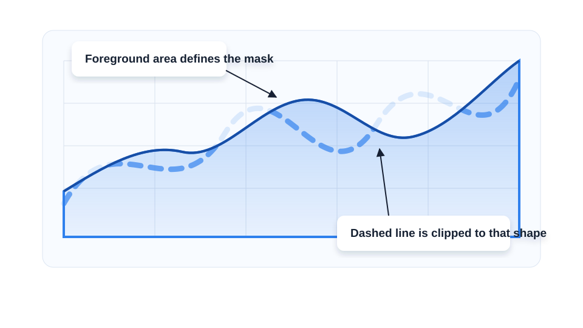

SVG charts
Pathgather: Charts
A small charting detail became a useful lesson: sometimes the cleanest way to preserve a design is to compose SVG layers directly.
The detail
The design included a semi-transparent dashed blue line. The line was not simply behind a white shape with reduced opacity. It needed to be a real dashed line, masked by the shape of another dataset.
That makes the chart a composition problem. One dataset defines the visible region. Another dataset draws the line. The final image comes from layering them in the right order.

The SVG move
SVG already has the primitive for this: put a shape inside a clipPath, give that clip path an id, then reference the id from another element.
<clipPath id="foreground-area"> <path d="...the foreground area shape..."/> </clipPath> <path d="...the dashed background line..." clip-path="url(#foreground-area)" stroke-dasharray="8 8" />
The important idea is not the exact chart library. The important idea is that SVG lets one layer use another layer as a mask.
The library move
The production component was built on top of an existing React charting library. The final chart took two datasets as input and composed several rendered layers.
The interesting part was that the library did not explicitly expose every SVG attribute. So the job became: trace where props flow, find an object that gets spread onto the final SVG element, and pass clipPath through that opening.
<VictoryArea
data={foreground}
dataComponent={
<clipPath id={clipPathId}>
<Area {...props}/>
</clipPath>
}
/>
<VictoryLine
data={background}
dataComponent={
<Area events={{ clipPath: `url(#${clipPathId})` }}/>
}
/>
That is a little hacky, but in a useful way: understand the abstraction well enough to route the underlying platform feature through it.
The debugging client
The old hash-base-image React app in this repo was a client for debugging a QuickChart-style service: JSON chart input went into the URL, and the service rendered a PNG image from an SVG/React chart.
That kind of tool is valuable because image rendering bugs are hard to inspect from the final PNG alone. You want a narrow loop: edit the input, see the generated image, copy the URL, and keep the rendering service honest.